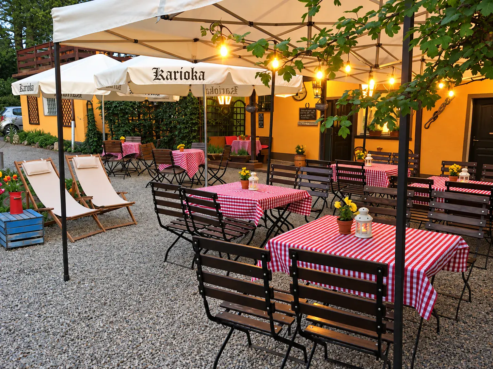

Komunie i rodzinne uroczystości
Nakryte stoły, domowa kuchnia z baru i dzieci, które od razu znikają na huśtawce.
Spotkania integracyjne
Firma, klub albo ekipa znajomych. Ogród na cały dzień, grill, a wieczorem ognisko.
Pikniki i imprezy plenerowe
Grill i ognisko na świeżym powietrzu, z lampionami i światełkami, gdy zapada zmrok.

Wszystko na miejscu.
- Ogród z namiotem i altaną oraz plac zabaw z huśtawką dla dzieci.
- Bar z domową kuchnią, piwem i drinkami: zobacz menu.
- Pięć pokoi nad barem i 14 miejsc noclegowych, więc goście nie muszą wracać po zmroku.
- Zwierzęta mile widziane, dopłata 20 zł za dobę.
Opowiedz, co planujesz.
Termin, liczbę gości i rodzaj imprezy ustalamy rozmową. Powiemy, co możemy przygotować.
721 832 199
lub napisz: agrokarioka@poczta.onet.pl